Q6. International

Both indexes indexed to their peaks. The Nikkei 225 fell to about 18% of its 1989 peak and did not regain it until Feb 2024, over 34 years. The Nasdaq lost about 78% and recovered in Apr 2015. Two cases only: they show what a bubble deflation can look like, not that one is due.
Sources: FRED NIKKEI225: Nikkei Inc. Nikkei 225 FRED NASDAQCOM: Nasdaq Composite

IMF World Economic Outlook general government gross debt, % of GDP (latest year in FRED shown in legend). China's ratio has more than doubled since the mid-2010s on the IMF measure, which excludes much local-government financing-vehicle debt.
Sources: FRED GGGDTAJPA188N: IMF WEO Japan FRED GGGDTAITA188N: IMF WEO Italy FRED GGGDTACNA188N: IMF WEO China

BIS total credit to the private non-financial sector (households and companies). China reached 201% of GDP in Oct 2025, up from 107% in 2008. Japan's ratio peaked at 214% in Oct 1993 before its lost decades; the BIS has long flagged rapid credit build-ups as a crisis warning.
Sources: FRED QCNPAM770A: BIS China FRED QJPPAM770A: BIS Japan FRED QUSPAM770A: BIS US FRED QXMPAM770A: BIS euro area BIS credit statistics
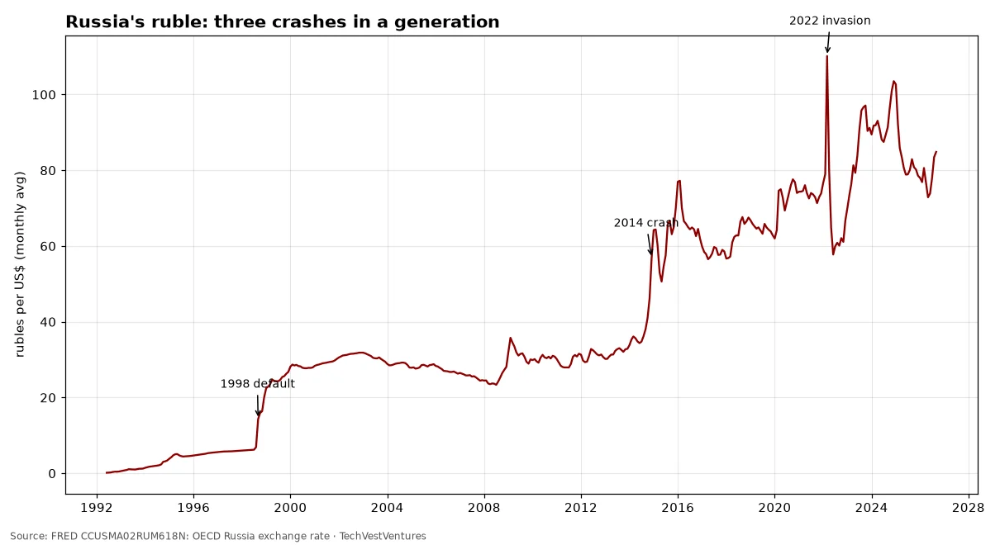
Rubles per dollar, monthly average (OECD): 84.8 in Sep 2026, peak monthly average 110.2 in Mar 2022. The 1998, 2014 and 2022 ruble collapses each followed a combination of oil weakness, sanctions or default.
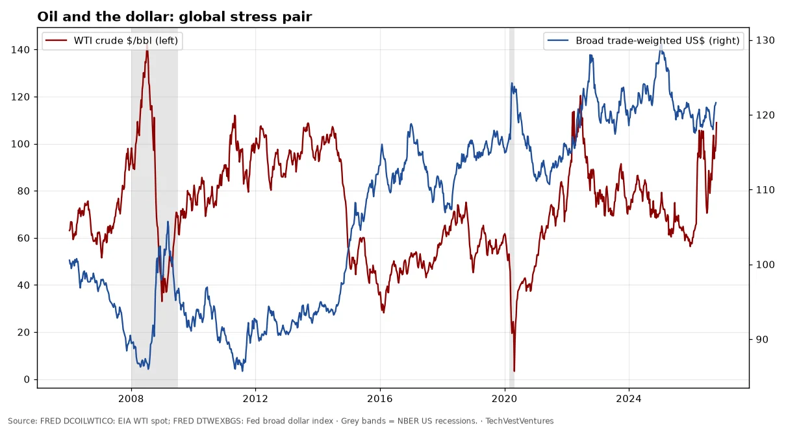
WTI crude $107.89 on Oct 20, 2026; Fed broad dollar index 121.4 on Oct 16, 2026. Oil spikes have preceded several US recessions (1973, 1979, 1990, 2008) — four episodes, not a law.
Sources: FRED DCOILWTICO: EIA WTI spot FRED DTWEXBGS: Fed broad dollar index
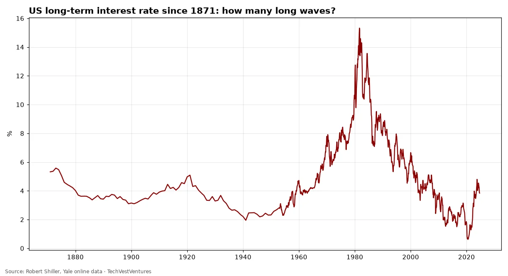
Long-term US government bond yield from Shiller's data. Major troughs around 1899, 1941 and 2020; one great peak in 1981 (15.3%). In 150 years that is roughly two to two-and-a-half long (Kondratieff-length) cycles — fewer than the more-than-3 repetitions Michael Hentschel requires before treating a long-wave pattern as evidence.
Sources: Robert Shiller, Yale online data

Monthly 10-year government bond yields (OECD via FRED), latest Sep 2026 (Italy Aug). Japan's 3.05% is the highest since 1996; the UK's 5.24% and the US 4.99% are the highest since mid-2007; France since 2008 and Germany since 2009. The IMF's Oct 13 blog says the G7 average 10-year yield is the highest in nearly two decades and warns of the fiscal stakes. Cycle count: since 1990 the US 10-year has made three major cyclical peaks (late 1994, early 2000, mid-2007); two were followed by a US recession within about 1-2 years (2001, 2008-09) and one by a soft landing (1995). Three cycles with a 2-of-3 hit rate is right at Michael Hentschel's threshold, so read it as a warning, not a prediction.
Sources: FRED IRLTLT01USM156N (and DE, FR, IT, JP, GB, CA) IMF blog, Oct 13, 2026

China new-car sales, millions: petrol peaked 2017; EVs lead since 2025. IEA to 2025, CPCA Jan–Sep 2026.
Data
- 2017 (Data): petrol and diesel car sales peaked at 23.6M (IEA).
- 2025 (Data): petrol and diesel cars fell to 11.8M, half the peak; NEVs outsold them.
- Jan–Sep 2026 (Data): petrol and diesel retail 5.6M, down 31% year on year (CPCA).
- Full-year 2026 (Projection/Speculation): about 7.5M if the Jan–Sep pace holds, roughly −68% vs 2017.
Doubt: China's NEV count includes plug-in hybrids (PHEVs), which still burn petrol, so 'petrol is dying' overstates the shift.
Sources: IEA Global EV Outlook 2026 via Our World in Data CPCA Sep 2026 retail via CnEVPost
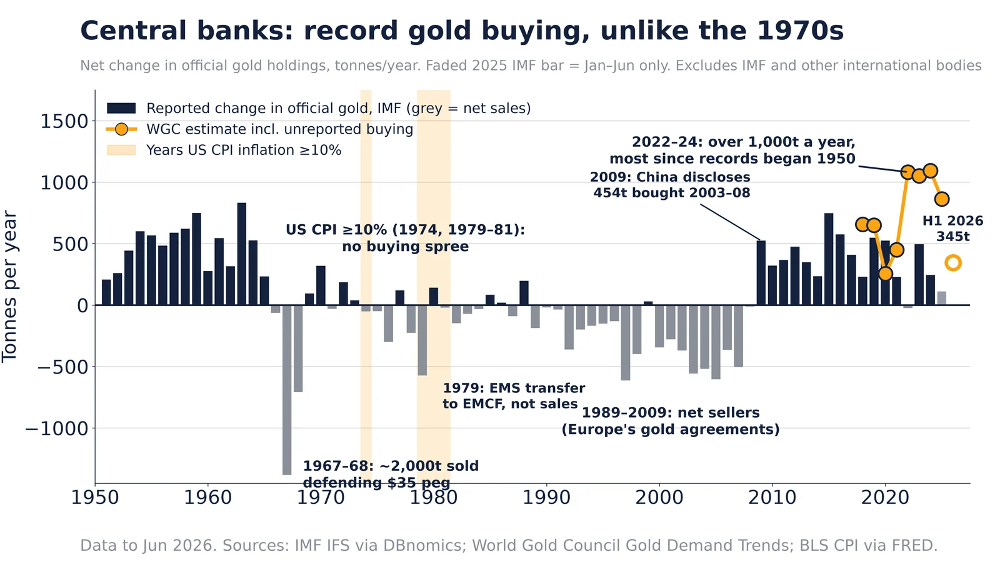
Central-bank net gold purchases, tonnes per year, 1950–H1 2026. Sources: IMF IFS, World Gold Council.
Data
- 2022–2024 (Data): over 1,000t a year by WGC estimates (2022: 1,082t; 2024: 1,092t), the most since records began in 1950.
- H1 2026 (Data): 345t bought (WGC).
- 1974 and 1979–81 (Data): US inflation hit 10%+ but central banks did not go on a gold buying spree.
- 1989–2008 (Data): central banks were net sellers in most years.
Doubt on the viral version: Rand Group's 'line went vertical, then double-digit inflation' chart tracks the gold price or reserve value, not tonnes bought. Purchases did not surge in the 1970s.
Rebuttal: Original post: Rand Group, Oct 27, 2026
Sources: IMF IFS official gold holdings via DBnomics World Gold Council Gold Demand Trends FRED CPIAUCNS (US CPI)
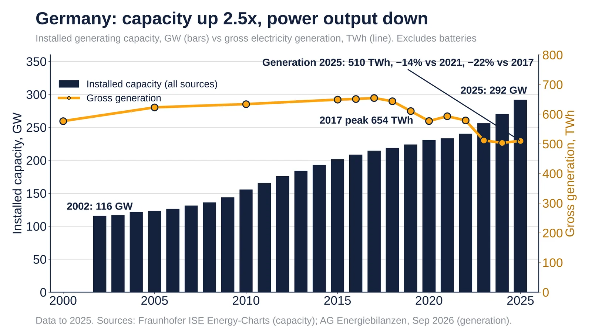
Germany 2025: 292 GW installed (2.5x 2002), but generation 510 TWh, −14% vs 2021. Energy-Charts, AGEB.
Data
- 2002 → 2025 (Data): installed capacity rose from 116 GW to 292 GW, mostly solar and wind.
- 2017 (Data): gross generation peaked at 654 TWh.
- 2025 (Data): generation 510 TWh, −14% vs 2021 and −22% vs 2017; renewables 58% of output.
- Apr 2023 (Data): Germany closed its last nuclear plants; nuclear capacity is now zero.
Caveat: solar and wind run far fewer hours than coal or nuclear, so rising capacity with falling output is partly by design. Lower demand and imports also cut generation.
Sources: Fraunhofer ISE Energy-Charts, installed power AG Energiebilanzen, gross generation, Sep 2026

Germany fertility 1.32 in 2025, lowest since 1996; replacement is 2.1. Sources: Destatis, World Bank.
Data
- 1964 (Data): 2.54, the baby-boom peak.
- 1994 (Data): 1.24, the post-reunification low.
- 2021 (Data): 1.58.
- 2025 (Data): 1.32, the fourth straight fall and the lowest since 1996.
Sources: Destatis, total fertility rate (Stand Jul 2026) World Bank SP.DYN.TFRT.IN, Germany
Rand Group claim. IMF data put the dollar at 56.7% of allocated reserves.
Claim checked against Data
- Oct 2026 (Claim): Rand Group said the dollar is down to about 40% of world reserves.
- Sep 30, 2026 (Data): IMF COFER puts the dollar at 56.7% of allocated FX reserves.
Doubt: the 40% figure does not match IMF data, and we could not find the original post or its source.
Rebuttal: IMF data brief, Sep 30, 2026
Sources: IMF data brief, Sep 30, 2026
Interpretation: a trader's chart call, Oct 23, 2026. Not data; no TVV rebuild.
Interpretation
- Oct 23, 2026 (Interpretation): Rand Group wrote that a silver breakdown 'would trigger a further freefall'.
Doubt: this is technical analysis of one price chart, with no supporting supply or demand data. Treat it as opinion.
Rebuttal: Silver Institute: World Silver Survey (supply and demand data)
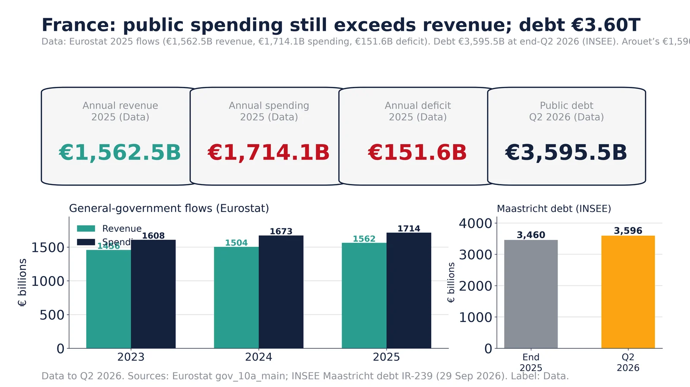
2025: revenue €1,562.5B, spending €1,714.1B, deficit €151.6B. Debt €3,595.5B Q2 2026. Eurostat, INSEE.
Data
- 2025 (Data): Eurostat general-government revenue €1,562.5B; spending €1,714.1B; deficit €151.6B (5.1% of GDP per INSEE).
- End-2025 (Data): Maastricht debt €3,460.1B (115.7% of GDP).
- Q2 2026 (Data): debt €3,595.5B (119.0% of GDP); net debt €3,366.8B (INSEE IR-239, 29 Sep 2026).
- Arouet graphic claimed €1,590 / €1,755 / €165 / €3,650 — each figure is higher than the official series; TVV uses Eurostat/INSEE only.
Arouet’s framing (‘bankrupt’, ‘never repay’) is opinion. Official deficit is large but not unique in Europe; debt sustainability depends on rates, growth and ECB backstops, which this chart does not model.
Rebuttal: INSEE: France public deficit and debt (IR-239)
Original post: Michael A. Arouet, Nov 2026
Sources: Eurostat gov_10a_main: general government revenue and expenditure INSEE: France public deficit and debt INSEE English: government debt

2025 Projection: UK −16,500 (−24.5 per 100k). Henley/New World Wealth provisional. Not a government series.
Projection
- 2025 Projection (Henley/New World Wealth): UK net −16,500 millionaires; China −7,800; India −3,500; S Korea −2,400.
- Per 100k (TVV calc from Henley flows ÷ mid-year population): UK −24.5; S Korea −4.6; Israel −3.6; France −1.2 — matches Arouet’s chart within rounding.
- Absolute vs per-capita: China loses more people (−7,800) but only −0.6 per 100k because of population size.
- Henley defines HNWI as liquid investable wealth ≥ $1M (excludes most real estate in 2025 methodology).
Henley/New World Wealth figures are provisional commercial estimates, not official migration stats. Tax Policy Associates (Jul 2025) argues the methodology is opaque and inconsistent with HMRC/OBR non-dom evidence; treat as directional only.
Rebuttal: Tax Policy Associates: Henley millionaire-migration methodology critique
Original post: Michael A. Arouet, Nov 2026
Sources: Henley Private Wealth Migration Report 2025 (press) Henley country wealth flows Tax Policy Associates critique (Jul 2025)
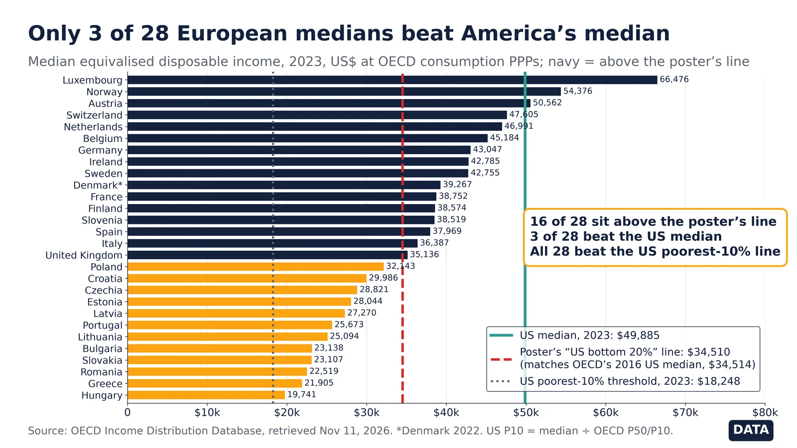
2023, US$ PPP: 16 of 28 European medians top poster’s $34,510 line; all beat US poorest 10%. OECD IDD.
Data
- 2023 (Data): OECD median equivalised disposable income in US$ at consumption PPPs: US $49,885. Only Luxembourg ($66,476), Norway ($54,376) and Austria ($50,562) are higher among 28 European countries.
- 2023 (Data): the US poorest-10% threshold is $18,248 (OECD median ÷ P50/P10 ratio of 2.73). All 28 European medians are above it, the lowest being Hungary at $19,741.
- Poster’s line (Data): the $34,510 “US bottom 20%” figure matches the OECD’s 2016 US median ($34,514), not a bottom-quintile value. Against it, 16 of 28 European medians sit higher, not 1.
- 2025 (Data): the poster’s European figures are in PPS (an EU-27 price unit) and don’t match Eurostat’s 2025 medians: Luxembourg 37,673 (poster 40,000), Netherlands 29,714 (25,000), Hungary 11,958 (10,000).
- Method: comparing PPS to US dollars is not like-for-like, so TVV uses the OECD’s single US$ PPP measure for every country. Income year 2023 (Denmark 2022).
- Omitted: the US 20th-percentile threshold. Neither the OECD database nor the Census Table A-3 publishes it for disposable income, so the true “poorest 20%” line isn’t drawn.
The claim that all European countries except Luxembourg trail America’s poorest 20% is overstated. The poster’s threshold appears to be the 2016 US median, it compares PPS with dollars, and its European figures don’t match Eurostat. What does hold is that only 3 of 28 European countries beat the US median.
Rebuttal: OECD: Income and Wealth Distribution Database (IDD)
Original post: Michael A. Arouet, Nov 2026
Sources: OECD: Income and Wealth Distribution Database (IDD) OECD SDMX: disposable income (DSD_WISE_IDD) Eurostat ilc_di03: median equivalised income US Census Table A-3 (P60-286): income and poverty Original post: Michael A. Arouet, Nov 2026

End-2024: pension providers hold 206% of GDP in Denmark, 6% in Germany; poster within 6 points. OECD.
Data
- End-2024 (Data): OECD Table 9.2 puts assets held by pension providers at 206.4% of GDP in Denmark, 166.9% Switzerland, 157.9% Canada, 153.3% US, 150.9% Netherlands, 135.1% Australia, 115.8% Sweden and 78.4% UK. Arouet’s figures match, all within 6 points.
- End-2024 (Data): at the bottom, France 12.9%, Italy 11.7%, Spain 10.8% and Germany 6.4%. Poster’s 13, 12, 11 and 6 hold. The OECD total is 95.2% of GDP.
- End-2024 (Data): the OECD counts public pension reserve funds separately: Sweden 33.3%, Canada 27.4%, US 8.7%, Australia 8.6%, France 7.3%, Italy 5.4%. Adding them would lift Sweden to 149% and Canada to 185% of GDP.
- Definition (Data): OECD “pension providers” include occupational and personal plans, defined-benefit and defined-contribution, and some public-sector plans and book reserves. The poster’s “private” label is therefore loose, notably for Canada and Sweden.
- Context: low funded assets in France, Italy, Spain and Germany mostly reflect large pay-as-you-go state pensions, not an absence of retirement income. The chart compares funded assets, not pension generosity.
- Omitted: asset mix, returns and the poster’s year (not stated); TVV uses the OECD’s latest, end-2024.
The ranking holds, but “private retirement assets” overstates what is counted. The OECD category includes some public-sector and book-reserve plans, and reserve funds sit on top. Low funded assets in France and Germany do not mean thin pensions, because the state pays most benefits from current taxes.
Rebuttal: OECD Pensions at a Glance 2025: assets earmarked for retirement (Table 9.2)
Original post: Michael A. Arouet, Nov 2026
Sources: OECD Pensions at a Glance 2025: assets earmarked for retirement (Table 9.2) OECD Pensions at a Glance 2025 (publication page) Original post: Michael A. Arouet, Nov 2026

2025 vs 2015 industrial output: Poland +54%, Switzerland +36%, Austria +23%, Germany −11%. Eurostat.
Data
- 2025 vs 2015 (Data): Eurostat calendar-adjusted industrial production (mining, manufacturing, energy) is up 54.3% in Poland, 35.7% Switzerland, 23.1% Austria, 13.5% Czechia and 4.6% Netherlands, flat in France (−0.2%) and down 10.8% in Germany. Every poster figure holds to within 1 point.
- 2018 peak (Data): Germany’s index peaked at 108.6 (2021=100) in 2018 and was 92.3 in 2025, so the fall from the peak is 15%. INSEE dates the German decline from 2018.
- Jan–Sep 2026 (Data): vs the 2015 average, Poland +57%, Czechia +15%, Netherlands +9%, Austria +22%, France −1%, Germany −12%. Switzerland is +38% (Jan–Jun only; Eurostat has no Swiss data after Jun 2026).
- EU context (Data): the EU27 index is up 7.2% over the same decade, so Germany’s −11% sits well below the bloc and Poland’s +54% well above it.
- Switzerland (Data): the gain is mostly pharmaceuticals. WIFO notes Swiss and Danish industrial growth is mainly pharma, and excluding it the gap with Austria largely closes.
- Omitted: causes (energy prices, autos, China) and value-added or jobs measures. The chart shows output volume only.
The figures are right, but they measure output volume from one start year. Poland starts from a low base (index 73 in 2015 vs 100 in 2021), and Switzerland’s rise is largely a pharma story, not broad manufacturing. The chart cannot show why Germany fell, and Covid and 2022 energy shocks are in the window.
Rebuttal: WIFO: industrial production in Austria and Switzerland (2025)
Original post: Michael A. Arouet, Nov 2026
Sources: Eurostat sts_inpr_a: annual industrial production Eurostat sts_inpr_m: monthly industrial production WIFO: industrial production in Austria and Switzerland (2025) INSEE: industrial production in the euro area (March 2025 note) Original post: Michael A. Arouet, Nov 2026

Europe-US gas price ratio: 2.1x in 2015–20, 6.4x in 2022, 9.6x Oct 2026, 9.0x Nov 12. World Bank, Yahoo.
Data
- 2015–2020 (Data): the World Bank Pink Sheet’s Europe (TTF) over US (Henry Hub) gas ratio averaged 2.05x. Rand’s “about 2x” holds.
- 2022 (Data): the ratio averaged 6.4x, matching Rand’s 6.4x. The monthly peak was 10.2x in Dec 2021.
- Oct 2026 (Data): Europe $28.50/mmbtu vs US $2.96 gives 9.6x. The World Bank says Europe gas rose 12.1% in October (Pink Sheet, Nov 3, 2026).
- Nov 12, 2026 (Data, TVV calc.): front-month TTF €92.26/MWh at 1.1095 $/€ and 3.412 mmbtu/MWh is $30.00, vs Henry Hub $3.34, so 9.0x. Rand’s 10.7x is overstated by about 1.7x for “now”.
- Oct 26 to Nov 6, 2026 (Data): the daily futures ratio peaked at 12.2x on Oct 26, was 10.9x on Nov 2 and 9.4x on Nov 6. The 10.7x is probably a reading from early November.
- Method: monthly series from World Bank averages; daily from Yahoo front-month futures, a different basis. Nov 13 intraday excluded. Omitted: EIA monthly spot (not needed for the ratio).
The 10.7x is not a current figure on any basis TVV could check: monthly 9.6x, front-month 9.0x on Nov 12. The ratio swings 2–3 points in days, and futures conversion depends on the euro rate. The historical 2x and 6.4x figures hold, so the trend claim is right but “now” is overstated.
Rebuttal: EIA: Henry Hub natural gas spot price (monthly)
Original post: Rand Group, Nov 2026
Sources: World Bank: commodity markets World Bank Pink Sheet: historical monthly commodity data (xlsx) Yahoo Finance TTF=F (Dutch TTF natural gas futures) Yahoo Finance NG=F (Henry Hub natural gas futures) EIA: Henry Hub natural gas spot price (monthly) Original post: Rand Group, Nov 2026

Ransomware leak-site victims annualized: 9,960 (Apr–May) to 11,658 (Sep–Oct 2026), +17%. ransomware.live, Nov 18.
Data
- Nov 17, 2026 (claim): Rand’s chart, “Estimated Total Cyber Incidents, 60-day moving average, annualized”, cites only “Custom”. No data or method is published, so the 3,500 and 10,000 figures cannot be checked.
- Apr–Oct 2026 (Data): ransomware.live counted 869 and 791 leak-site victims in April and May, and 847 and 1,096 in September and October. Two-month totals annualized rise from 9,960 to 11,658, up 17%.
- 2025–2026 (Data): 8,227 victims in all of 2025; 9,604 in 2026 through Nov 18. Counts are rising, but nowhere near threefold in six months.
- Aug–Oct 2026 (Data): Breachsense counts 964, 789 and 953 victims. Trackers differ by month but neither shows a tripling.
- Sep 2026 (Data): Check Point reports 2,803 weekly attacks per organisation, up 48% on a year earlier, and 824 ransomware attacks, up 53%.
- Jun vs Sep 2026 (Data): Epoch AI/Ipsos polls found 46.2% and then 44.6% of US adults reporting a cyber incident in the past year, no detectable rise after Claude Fable 5.
- Omitted: Rand’s own series (unpublished). Leak-site victims are a proxy, not a count of all incidents.
The tripling rests on an unpublished “Custom” estimate. Public series rose, by 17% over the same six months on ransomware.live and 48–53% year on year in Check Point data, not 180% in six months, and an Ipsos poll found no rise in incidents reported by US adults.
Rebuttal: Epoch AI: cyber incidents flat since Claude Fable 5
Original post: Rand Group, Nov 2026
Sources: ransomware.live: 2026 leak-site victim statistics ransomware.live: 2025 leak-site victim statistics ransomware.live: 2024 leak-site victim statistics Breachsense: October 2026 ransomware report Check Point Research: September 2026 cyber threat landscape Epoch AI: cyber incidents flat since Claude Fable 5 Original post: Rand Group, Nov 2026

Q2 2016–Q3 2026 real GDP: UK +14.7%, France +12.6%, Italy +12.2%, Germany +8.0%. ONS, Eurostat.
Data
- Q2 2016 to Q3 2026 (Data): real GDP is up 14.7% in the UK, 12.6% in France, 12.2% in Italy and 8.0% in Germany. Arouet’s figures match exactly.
- Same period (Data): the EU27 as a whole grew 17.7%, more than the UK. The comparison holds against the three large economies, not the EU.
- Per head (Data): from 2016 to the year to Q2 2026, real GDP per person rose 6.4% in the UK, 8.2% in France, 13.8% in Italy and 4.6% in Germany. The UK lead comes from faster population growth.
- Since Q4 2019 (Data): UK +7.0%, Italy +8.7%, France +6.1%, Germany +2.1%. Italy has grown faster than the UK since the pandemic.
- Q3 2026 (Data): UK GDP grew 0.7% on the quarter in the ONS first estimate (Nov 12). First estimates are often revised.
- Omitted: the Nov 17 welfare chart (Universal Credit conditionality) and any no-Brexit counterfactual; neither is a GDP series.
The total-GDP claim holds, but it flatters the UK. Per person, Britain trails Italy and France since 2016 and only beats Germany. The UK also trails the EU27 aggregate, and the chart says nothing about what UK growth would have been without Brexit.
Rebuttal: ONS: UK real GDP per head (IHXW)
Original post: Michael A. Arouet, Nov 2026
Sources: ONS: UK real GDP, chained volume measures (ABMI) ONS: UK real GDP per head (IHXW) Eurostat: quarterly GDP and main components (namq_10_gdp) Eurostat: quarterly GDP per capita (namq_10_pc) Related post: Rand Group, Nov 2026 Original post: Michael A. Arouet, Nov 2026

2025 world imports: chips $1.20T, crude plus gas $1.61T, all oil and gas $2.32T. UN Comtrade, Nov 19.
Data
- Nov 16, 2026 (claim): a Deutsche Bank report by FX strategist Mallika Sachdeva, using ITC Trade Map, says semiconductor exports passed oil and gas for the first time over the four quarters to Q2 2026. Rand’s chart shows $1.60T against $1.52T.
- 2025 (Data): UN Comtrade world imports of integrated circuits (HS 8542) were $1.20T, against $1.61T for crude oil and natural gas (HS 2709 + 2711) and $2.32T including refined products (HS 2710).
- 2010–2025 (Data): Rand’s chips line matches Comtrade closely ($0.62T in 2014, $1.26T in 2022). Its oil and gas line does not: Comtrade shows $2.51T for crude plus gas in 2022 and $3.57T with products, against about $2.1T on Rand’s chart.
- 2020 (Data): chips came closest before now, $0.94T against $0.96T for crude plus gas, when oil prices collapsed.
- Jul 2025–Jun 2026 (Data): Brent averaged $76.5 a barrel, up from $68.1 in calendar 2025 (ICE futures via Yahoo). Higher prices make a fall in oil and gas trade to $1.52T less likely, unless the definition is narrow.
- Omitted: the quarterly Q2 2026 crossover itself. ITC Trade Map quarterly data needs a login and Deutsche Bank does not publish its product definition, so the $1.60T and $1.52T figures are not verified.
Chips are catching up fast, but the “first time ever” crossover depends on how oil and gas is defined. On UN data, chips were 52% of oil, products and gas trade in 2025 and 75% of crude and gas alone. The Q2 2026 figures cannot be checked without Trade Map’s subscription data.
Rebuttal: comtradeplus.un.org
Original post: Rand Group, Nov 2026
Sources: comtradeplus.un.org comtradeapi.un.org: public/v1/preview/C/A/HS marketdash.com: stock-market-news/78038/goodbye-petrodol fxbrokertrust.com: insights/deutsche-bank-semiconductor-tra finance.yahoo.com: quote/BZ%3DF/history Original post (X)

2026 share of world GDP (PPP): China 19.9%, India 8.6%, Russia 3.4%. IMF WEO October 2026 projection.
Data + Projection
- 2026 (Projection): the IMF’s October 2026 WEO puts China at 19.9%, India at 8.6% and Russia at 3.4% of world GDP at purchasing-power parity. Arouet’s chart, citing the April edition, shows the same except India at 8.5%.
- 1992–2026 (Data to 2025): Russia’s PPP share fell from 4.9% in 1992 to 3.4%, while China rose from 4.0% to 19.9% and India from 3.2% to 8.6%.
- 2026 at market exchange rates (Projection): China 16.8%, India 3.2%, Russia 2.2%. India is much closer to Russia than to China on this basis.
- 2010 to 2026 (Data and Projection): at market rates India rose from 2.5% to 3.2% while Russia went from 2.4% to 2.2%. The divergence is real but smaller than PPP suggests.
- Basis: the chart is correctly labelled PPP. PPP lifts poorer economies with low domestic prices, which is why India’s share is 2.7 times its market-rate share.
- Omitted: the summit commentary in the post (“what’s the point of the meeting with Russia”). That is opinion, not data.
The PPP figures are right, but the “different league” framing fits China far better than India. At market exchange rates, the basis that matters for trade and finance, India is 3.2% of world GDP and Russia 2.2%, against China’s 16.8%.
Rebuttal: imf.org: external/datamapper/api/v1/NGDPD
Original post: Michael A. Arouet, Nov 2026
Sources: imf.org: external/datamapper/api/v1/PPPSH/CHN/IND imf.org: external/datamapper/api/v1/NGDPD imf.org: en/publications/weo/issues/2026/10/13/wo Original post (X)

2025 notable AI models: US 59, China 35, EU 1 (Stanford AI Index 2026, Epoch AI). Read Nov 21, 2026.
Data
- Apr 2026 (Data): the Stanford AI Index 2026 counts 2025 notable AI models by country: US 59, China 35, South Korea 8, and one each for France, the UK, Canada, Hong Kong and Singapore. Arouet’s 59, 35 and 1 match. Europe as a whole had 2; the EU had 1, Mistral.
- Nov 21, 2026 (Data): Epoch AI’s current notable-models file, which the AI Index uses, now shows 2025 at US 66, China 36, EU27 1 after later additions. For 2026 to Nov 10 it shows US 60, China 34, EU27 2 (Mistral Large 4 and Medium 3.5).
- 2023–2025 (Data): the EU27 count fell from 12 to 5 to 1, while the US went 86, 58, 66 and China 23, 31, 36.
- 2025 (Data): on Epoch’s broader list of models trained with more than 10²³ FLOP, the counts are US 66, China 82, EU27 6 (Teuken, three Mistral models, INSAIT’s MamayLM, AGH’s Lapa). The EU gap holds on every definition.
- Aug 2, 2025 (Data): the EU AI Act’s rules for general-purpose models took effect. The EU decline from 12 to 5 began in 2024, before that date.
- Speculation: blaming regulation, energy prices or talent flight is opinion. The counts alone do not show the cause.
The count is real but small and curated. “Notable” is Epoch’s editorial list, not a census, and models are credited by author affiliation, so joint work can count twice. On the broader compute-based list the EU had 6 models in 2025, still far behind.
Rebuttal: epoch.ai: data/large-scale-ai-models
Original post: Michael A. Arouet, Nov 2026
Sources: hai.stanford.edu: assets/files/ai_index_report_2026_chapte epoch.ai: data/notable-ai-models epoch.ai: data/notable_ai_models.csv epoch.ai: data/large_scale_ai_models.csv digital-strategy.ec.europa.eu: en/policies/regulatory-framework-ai Original post (X)

Youth unemployment 2025, ILO estimates: China 15.8%, UK 14.6%, US 9.3%. China 1991: 4.4%. World Bank.
Data
- 2025 (Data): the ILO’s modelled estimates, published by the World Bank, put unemployment among 15–24 year olds at 15.8% in China, 14.6% in the UK and 9.3% in the US. China is 70% above the US, as Rand says.
- 1991–2025 (Data): China’s rate rose from 4.4% to 15.8%, 3.6 times. Rand’s “up four times” rounds up. France was 18.9% and Germany 6.9% in 2025.
- 2024 to 2025 (Data): China’s ILO estimate rose from 15.0% to 15.8%.
- Oct 2026 (Data): China’s statistics bureau reported 17.2% for urban 16–24 year olds not in school, down from 18.0% in September and 18.9% in August, and 0.1 points below Oct 2025. The bureau changed its method in Dec 2023 to exclude students.
- Oct 2026 (Data): the US rate for 16–24 year olds was 9.3% (BLS).
- Omitted: any claim about the cause. The post’s numbers are the data; the drivers are not in it.
The long-run rise is real, but the ILO numbers are modelled, especially before China published youth data, so the 1991 base is an estimate. The latest official monthly figure is falling, not still climbing, and the official and ILO series use different ages and coverage.
Rebuttal: zaobao.com.sg: en/news/china/chinas-youth-unemployment-
Original post: Rand Group, Nov 2026
Sources: data.worldbank.org: indicator/SL.UEM.1524.ZS api.worldbank.org: v2/country/CHN;GBR;USA;FRA;DEU/indicator zaobao.com.sg: en/news/china/chinas-youth-unemployment- scmp.com: economy/economic-indicators/article/3374 fred.stlouisfed.org: series/LNS14024887 Original post (X)

EU27 CO2 1990–2024: territorial −38%, consumption-based −25%. 2025 per person: EU 5.4t, China 8.8t. OWID.
Data
- 2025 (Data): CO2 per person was 14.5 tonnes in the US, 8.8 in China, 5.4 in the EU27 and 2.2 in India (Global Carbon Budget via Our World in Data). Rand’s chart matches.
- 1990–2024 (Data): EU27 territorial emissions fell 37.7%, from 3,869 to 2,412 Mt. Counting the CO2 in goods it imports, emissions fell 25.2%, from 4,361 to 3,261 Mt. Net imported CO2 was 849 Mt in 2024, 26% of the EU’s consumption footprint.
- 2021–2025 (Data): Eurostat’s industrial production index (2021 = 100) was 101.3 for all manufacturing in 2025, but 80.8 for chemicals, 88.9 for basic metals and 91.5 for paper. Energy-heavy industry shrank; manufacturing overall did not.
- 2021–2026 (Data): EU industrial electricity, excluding taxes, rose from €0.075 per kWh in H1 2021 to €0.192 in H2 2022 and was €0.131 in H1 2026. The spike came mainly from the 2022 gas crisis, not climate policy alone.
- 2022–2026 (Data): EU imports from China were €574bn in 2025, below the 2022 peak of €629bn. Jan–Sep 2026 imports were €471bn, up 10.2% on a year earlier.
- Speculation: Rand’s causal chain from climate policy to closed factories and more Chinese imports is opinion. The data show the pieces but not their cause.
Part of the EU’s cut was offshored: the consumption-based fall is 25%, not 38%. But manufacturing output overall is flat since 2021 and the energy shock came largely from Russian gas, so “climate policy closed the factories” overstates what the data show.
Rebuttal: ourworldindata.org: consumption-based-co2
Original post: Rand Group, Nov 2026
Sources: ourworldindata.org: co2-emissions owid-public.owid.io: data/co2/owid-co2-data.csv ourworldindata.org: consumption-based-co2 ec.europa.eu: eurostat/databrowser/view/sts_inpr_a/def ec.europa.eu: eurostat/databrowser/view/nrg_pc_205/def ec.europa.eu: eurostat/databrowser/view/ext_st_eu27_20 Original post (X)
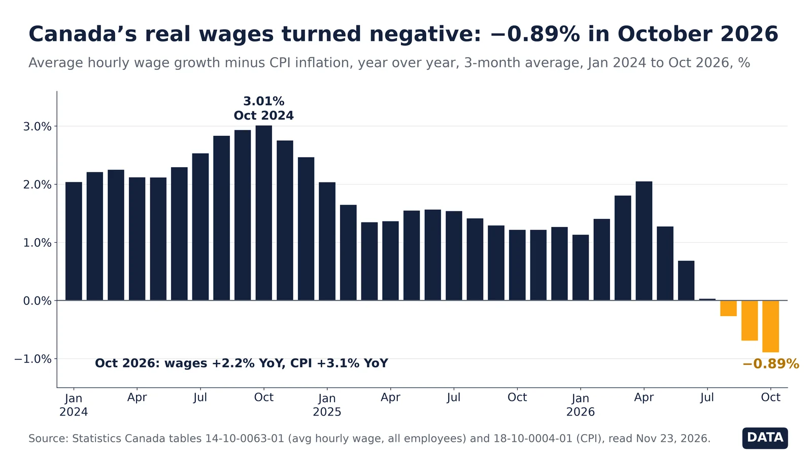
TechVestVentures.com Reports: Canada’s real wage growth fell to −0.89% in October 2026, negative since August. Statistics Canada.
Data
- Oct 2026 (Data): average hourly wages rose 2.24% on a year earlier, CPI 3.09%. The 3-month average of the gap is −0.89% (Rand shows −0.94%). Sep −0.69% and Aug −0.27%; Jul +0.03%.
- Oct 2024 (Data): the peak was +3.01%, Rand’s +3.02%. Apr 2026 was +2.05% and Mar +1.80%, matching Rand’s bars within 0.05 points.
- Aug 2026 (Data): the first negative 3-month reading since Mar 2023.
- Method (Data): TVV used Statistics Canada table 14-10-0063-01 (unadjusted monthly average hourly wage, all employees) and CPI all-items (v41690973). The remaining 0.05-point gap to the original chart may come from a different wage series or rounding.
- Speculation: Rand’s jibe about joining the EU is rhetoric. Real wages fall when CPI inflation (3.1%) outruns wage growth (2.2%); the data do not show why.
Average hourly wage is affected by who is employed: if lower-paid jobs were lost, average wages would rise and mask weakness, and the reverse. CPI is a headline measure and may not match each worker’s own costs. The −0.89% vs −0.94% gap suggests the original chart used a slightly different wage series.
Original post: Rand Group, Nov 2026
Sources: www150.statcan.gc.ca: t1/tbl1/en/tv.action www150.statcan.gc.ca: t1/tbl1/en/tv.action www150.statcan.gc.ca: t1/wds/rest/getCubeMetadata Original post (X)
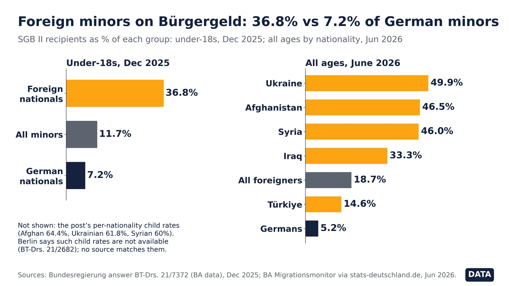
TechVestVentures.com Reports: Under-18s on Bürgergeld, Dec 2025: 36.8% of foreign nationals vs 7.2% of Germans. Bundesregierung, BA.
Data
- Dec 2025 (Data): the federal government’s answer to a parliamentary question (BT-Drs. 21/7372, using Federal Employment Agency data) puts the SGB II rate for under-18s at 11.7% overall, 7.2% for German and 36.8% for foreign nationals. Arouet’s 7.2% and 36.8% match.
- Jun 2026 (Data): the Employment Agency’s migration monitor, as shown on stats-deutschland.de, gives SGB II rates for all ages of 49.9% for Ukrainians, 46.5% Afghans, 46.0% Syrians, 33.3% Iraqis, 14.6% Turks, 18.7% all foreigners and 5.2% Germans.
- Mismatch: TVV could not match the post’s per-nationality child rates (Afghans 64.4%, Ukrainians 61.8%, Syrians 60%, Turks 22.2%, EU foreigners 19.2%). An earlier government answer (BT-Drs. 21/2682) says child rates by single nationality are not available, so those figures may measure something different.
- Dec 2025 (Data): foreigners made up about 46% of working-age recipients and Germans the rest; of 1.64 million minors receiving benefit, about 860,000 are German and 780,000 foreign.
- Speculation: whether immigration widens or narrows the fiscal gap in the long run is contested. This chart shows benefit receipt, not net fiscal contribution.
A rate is not a share of all recipients: Germans are 54% of all recipients (June 2026). Rates by nationality ignore age, family size and time in country, and children born to foreign parents are often counted as German, which lowers the German rate. Refugees from Ukraine arrived recently and receive Bürgergeld by law.
Original post: Michael A. Arouet, Nov 2026
Sources: aktuelle-sozialpolitik.de: 2026/08/04/von-solchen-und-anderen-kinde zeit.de: gesellschaft/2026-08/sgb-ii-grundsicheru kleineanfragen.info: drucksache/21/2682 stats-deutschland.de: buergergeld.html statistik.arbeitsagentur.de: Statistikdaten/Detail/202605/iiia7/grusi Original post (X)
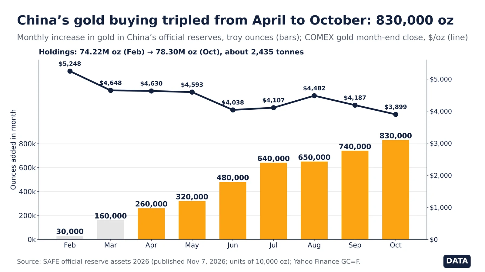
TechVestVentures.com Reports: China added 830,000 oz of gold in October 2026, up from 260,000 in April. SAFE, Nov 7, 2026.
Data
- Oct 2026 (Data): SAFE reports 7,830 units of 10,000 oz (78.30 million oz, about 2,435 tonnes), up 83 units (830,000 oz) from September’s 7,747.
- Apr to Oct 2026 (Data): monthly additions were 260,000, 320,000, 480,000, 640,000, 650,000, 740,000 and 830,000 oz. All seven of Arouet’s bars match SAFE.
- Feb and Mar 2026 (Data): additions were only 30,000 and 160,000 oz, so the step-up began in the spring.
- Feb to Oct 2026 (Data): COMEX gold’s month-end close fell from $5,248 to $3,899. SAFE values the gold at $306.4B in October, down from $323.5B in September despite more ounces.
- Speculation: Arouet’s view that the November sell-off was a short-lived liquidity scare driven by margin calls is opinion. November reserve data is due in early December.
SAFE reports month-end stocks rounded to 10,000 oz, not purchases, so each monthly change can be off by up to 10,000 oz either way and says nothing about when or at what price gold was bought. Analysts have long argued China holds gold outside the reported reserves, so the official figure may understate total buying.
Rebuttal: econdatatools.com: news/china-october-2026-gold-reserves-qu
Original post: Michael A. Arouet, Nov 2026
Sources: safe.gov.cn: safe/2026/0205/27113.html safe.gov.cn: safe/file/file/20261107/1d33340ced6d4d5e finance.yahoo.com: quote/GC%3DF/history/ goldmarketdaily.com: central-bank-gold-reserves-october-2026/ Original post (X)
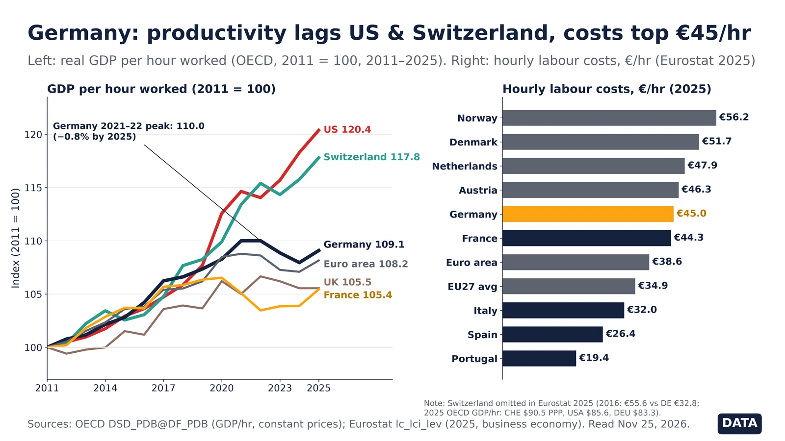
TechVestVentures.com Reports: German productivity trails US and Switzerland; business labour costs €45.0/hr. OECD & Eurostat, 2025.
Data
- Nov 25, 2026: On OECD total-economy GDP per hour worked (constant prices, 2011=100), US reached 120.4 (+20.4%) and Switzerland 117.8 (+17.8%) in 2025, while Germany rose to 109.1 (+9.1%) — down 0.8% from its 2021–2022 peak of 110.0.
- Nov 25, 2026: In 2025 constant-PPP terms, OECD GDP per hour worked stands at $90.52 in Switzerland, $85.60 in the US, $83.28 in Germany, $83.10 in France, and $69.14 in the Euro area.
- Nov 25, 2026: Eurostat 2025 hourly labour costs in the business economy put Germany at €45.0/hr (and €49.5/hr in manufacturing), above France (€44.3), the Euro area (€38.6), EU27 (€34.9), Italy (€32.0), Spain (€26.4), and Portugal (€19.4), though below Norway (€56.2), Denmark (€51.7), Netherlands (€47.9), and Austria (€46.3).
- Nov 25, 2026: Switzerland is omitted from Eurostat 2025 hourly labour cost levels (latest Eurostat entry is 2016 at €55.6/hr vs Germany €32.8/hr); OECD 2025 average annual wages remain higher in Switzerland (CHF 98,334 / $92,285 PPP) than Germany (€54,840 / $76,285 PPP).
Arouet claims Germany has "stopped being as productive as others... also to its European peers," and pairs US nonfarm business output/hr (129.3) with German total-economy GDP/hr (112.4). On a like-for-like OECD total-economy basis (2011–2025), Germany (+9.1%) did lose ground to the US (+20.4%) and Switzerland (+17.8%) and slipped 0.8% from 2021–2022, yet still outpaced the Euro area (+8.2%), UK (+5.6%), and France (+5.4%). The VW Emden €74/hr plant figure also exceeds economy-wide Eurostat German manufacturing labour costs (€49.5/hr) because OEM collective agreements include shift/benefit premia.
Rebuttal: sdmx.oecd.org: public/rest/data/OECD.SDD.TPS,DSD_PDB@DF
Original post: Michael A. Arouet, Nov 2026
Sources: Original post (X) x.com: MichaelAArouet/status/212559103069096384 sdmx.oecd.org: public/rest/data/OECD.SDD.TPS,DSD_PDB@DF ec.europa.eu: eurostat/databrowser/view/lc_lci_lev/def ec.europa.eu: eurostat/databrowser/view/namq_10_lp_ulc fred.stlouisfed.org: series/OPHNFB